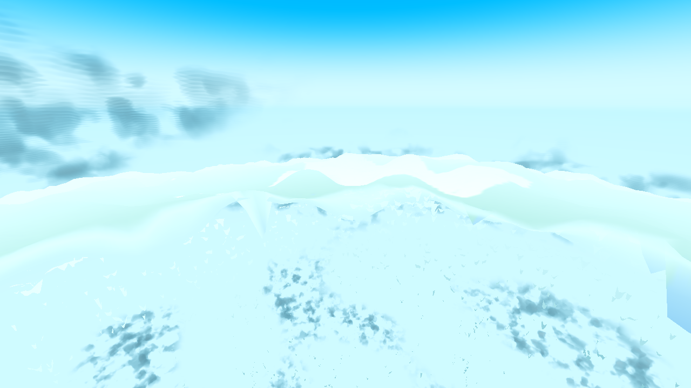
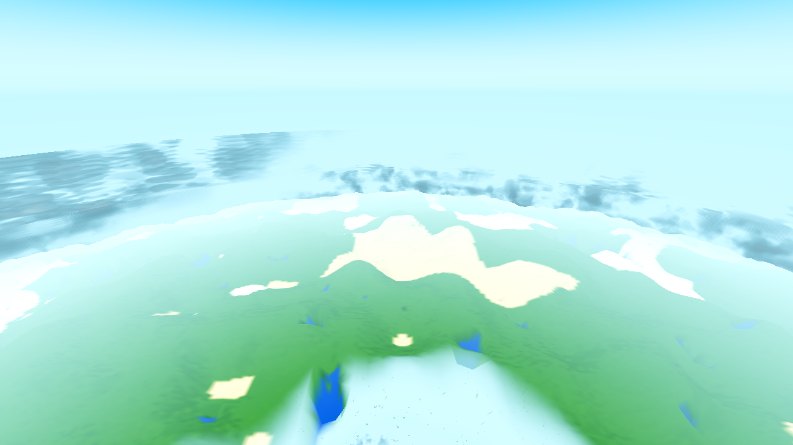
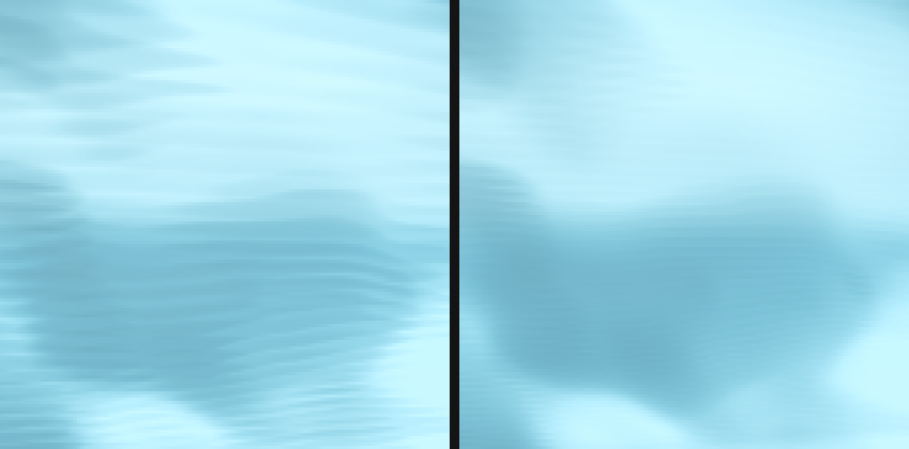
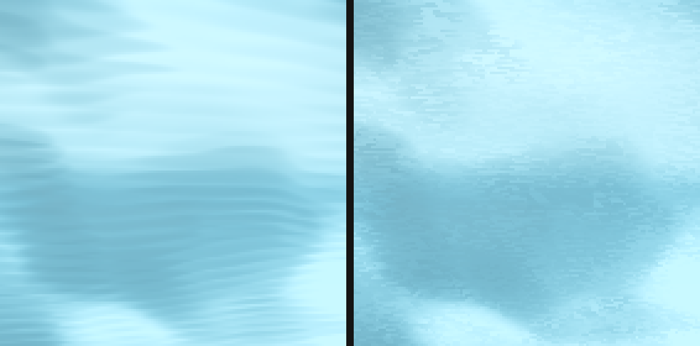
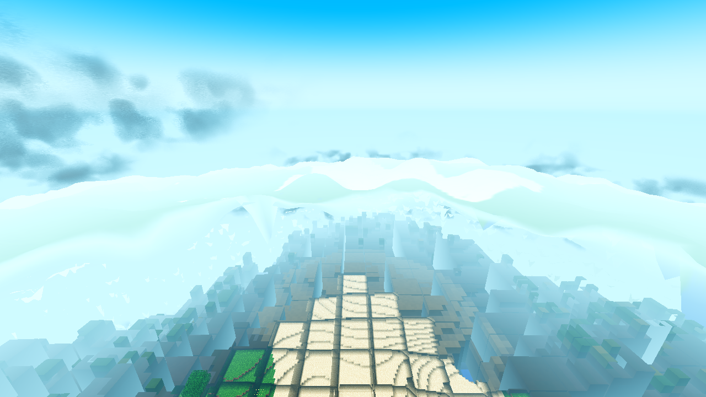
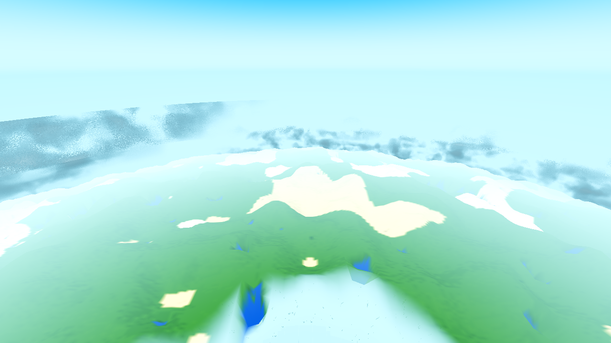
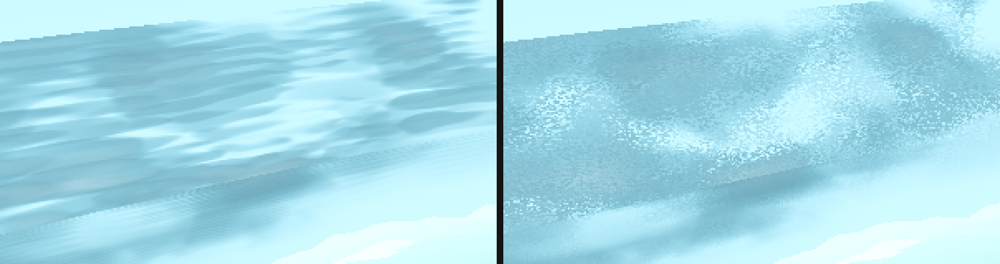
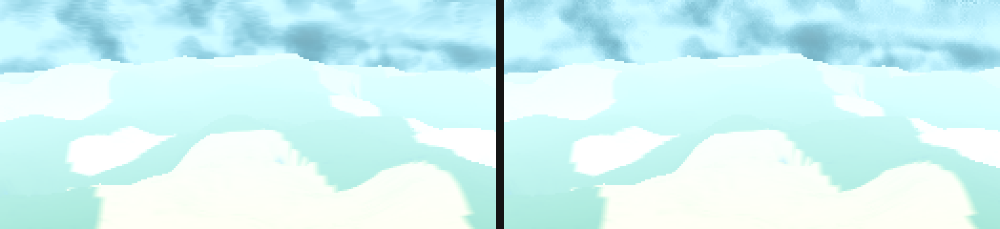
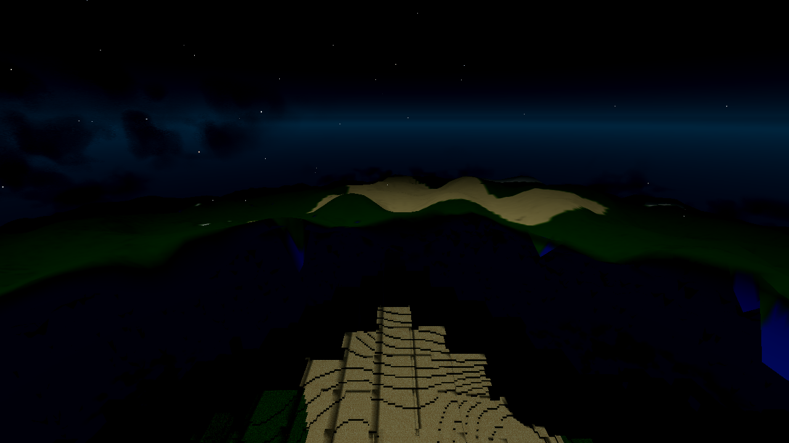
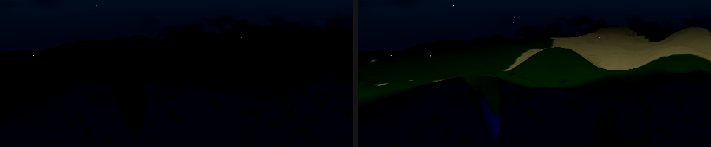

Sat Oct 17 2026 · Forward+/lavapipe proxy renders (1280×720, R24/F83 user config, seed 44,
T frozen, CLOUD_T0=411200) · the AC-0384 r24 recipe verbatim · evidence frames in
captures/ beside this page.
cloud_jitter, DEFAULT ON).
The A/B established that the banding is coherent screen-space phase alignment of the fixed raymarch grid
(candidate C2), not step coarseness alone: raising the march from 24 → 48 steps softened the pattern
(residual stripes at 4× zoom, +39 % measured render wall) while per-pixel grid jitter at the same 24
steps removed it (no visible parallel structure, wall ≤ baseline). Both acceptance frames re-taken
settled (drain 1200) with no banding/moire at either altitude; brightness spread, volume, cloud_gate and the
AC-0436 moon-lit look all measured/inspected intact; render cost measured before and after and NOT increased.Shallow-angle views of the raymarched cloud deck (the AC-0405 volume on the outer shell, annulus [R+275, R+450], 24 count-based steps per annulus segment) show parallel stripes — an interference pattern, not cloud structure. Filed from the AC-0384 §29 assessment: the 120 m frame (upper-left mass) and the 300 m frame (horizon band) — the player's main flight altitudes.


tasks/AC-0384/ac0384-r24-300-day-rerun.png (side-by-side during calibration).Three candidate causes named in the ticket: (a) fixed step too coarse for distance traversed;
(b) no jitter/dither to break screen-space alignment; (c) sampling density not adapting to layer thickness.
The ticket's own method decides it: render the same view with (i) the step count raised, (ii) jitter enabled,
(iii) both, and see which removes the pattern rather than merely softening it. Four diagnostic renders
(drain 120, the r24 ladder condition — the cloud deck is world-fixed and independent of terrain streaming, so
the A/B on it is valid) plus three settled acceptance renders (drain 1200/600), one godot at a time,
Forward+ boot line asserted, snapshot file-existence checked (the SNAP FAIL trap), no
AWECRAFT_LOGIC arm.
.scratch/AC-0441/stripe.py (pure PIL, no numpy): 2D power spectrum of 64×64 crops,
periods 16–4 px band, coherence = top-bin power over the same-radius envelope (a smooth gradient's
radial falloff cancels; a true stripe peak far exceeds its own-radius neighbours), conjugate-pair check,
ripple_rms (oscillation amplitude) and cloud_scale_lfsd (16-px block-mean std — the
volume/brightness-spread guard). Calibration on the assessment frames showed the 21 px / 16 px / 10.7 px bins
are reproducible pipeline constants of this box (present in the cloudless clean sky of every frame at
~0.26 ripple amplitude — tonemap/driver, not the cloud march); the defect separates on
ripple_rms 2.2–8.2 in cloud regions vs 0.23–0.36 clean sky (8–30×). The instrument is a
screening + amplitude/preservation tool; the ticket's acceptance is visual on the re-taken frames, which the
zoom crops below adjudicate.
| arm | setting | wall s | vs baseline |
|---|---|---|---|
| baseline (OFF) | AWECRAFT_CLOUDJIT=0, 24 steps | 105 | — |
| steps raised | AWECRAFT_VOLSTEPS=48, jitter OFF | 146 | +41 s (+39 %) |
| jitter | AWECRAFT_CLOUDJIT=1, 24 steps | 92 | −13 s (≤ 0, within run-to-run noise) |
| crop (x,y) | arm | ripple_rms | lfsd | band3 | bandCoh | top period px |
|---|---|---|---|---|---|---|
| (30,100) | baseline | 2.90 | 11.96 | 0.200 | 7.27 | 16.0 |
| steps 48 | 1.17 | 12.12 | 0.266 | 8.29 | 16.0 | |
| jitter | 3.19 | 12.01 | 0.217 | 7.41 | 16.0 | |
| (120,70) | baseline | 2.42 | 13.32 | 0.144 | 9.12 | 12.6 |
| steps 48 | 1.13 | 13.71 | 0.110 | 2.96 | 15.5 | |
| jitter | 2.50 | 13.34 | 0.084 | 2.66 | 15.5 | |
| (220,140) | baseline | 3.73 | 14.75 | 0.118 | 12.67 | 12.8 |
| steps 48 | 1.83 | 15.24 | 0.112 | 2.36 | 16.0 | |
| jitter | 3.44 | 14.85 | 0.097 | 2.48 | 16.0 | |
| (60,200) | baseline | 3.27 | 12.81 | 0.137 | 19.78 | 16.0 |
| steps 48 | 1.98 | 13.99 | 0.149 | 12.19 | 16.0 | |
| jitter | 3.26 | 12.75 | 0.149 | 11.60 | 16.0 | |
| (150,220) | baseline | 2.18 | 4.49 | 0.086 | 2.29 | 16.0 |
| steps 48 | 1.45 | 4.52 | 0.111 | 2.34 | 16.0 | |
| jitter | 2.21 | 4.47 | 0.101 | 2.27 | 15.5 |
Read: steps-48 cuts the oscillation amplitude (~halved ripple) but keeps coherent structure (bandCoh 2.4–8.3, and residual stripes visible at 4× — softened). Jitter keeps the energy (ripple ≈ baseline, lfsd ≈ baseline — the energy went where, not away) and collapses the cloud-march-owned coherent peaks in 4 of 5 crops (9.1→2.7, 12.7→2.5, 19.8→11.6, 2.3→2.3; the (30,100) crop's residual is the near-white flat-top region's gradient/quantization class — the same bins the cloudless sky controls carry — not the mass's stripes). The visual adjudication:


t = t0 + (i+0.5)·dl with
dl = chord/24. t0 and dl vary smoothly across the screen with the
ray's impact parameter, so adjacent pixels march the same phased grid against the world-fixed density
field — the aliasing accumulates coherently into parallel stripes, worst at shallow angles (long chord, coarse
dl, slowest phase change). Doubling the count halves dl (less aliasing amplitude
— the softening) but the grid stays screen-coherent (the pattern survives, finer). Shifting each pixel's grid
by an independent random in [0,1) turns the coherent phase offset into uncorrelated per-pixel randomness —
the structured artifact becomes noise the eye tolerates, at the identical sample count. The ticket's "trades
structured artifact for tolerable noise at the same sample count" is exactly what was measured.| file | change |
|---|---|
godot/core/cloud_layer.gdshader | uniform float u_jit : hint_range(0.0,1.0) = 0.0 (default 0.0 = OFF = the exact current grid, bit-for-bit: (i+0.5+0.0) = (i+0.5), the t > t1 break never trips — IEEE identity). When u_jit > 0.5, vmarchseg takes a per-segment offset jg and marches t = t0 + (i+0.5+jg)·dl; fragment() derives two independent per-pixel offsets (ahash of a ~4.6 m quantized world-position cell, two seeds) — one per annulus segment — stable between frames, unique per pixel, moving with the world as the camera moves (no shimmer). A shifted sample past the segment end is dropped (early-out). The light-march taps are NOT jittered (anchored to the sample's world position, not a screen-coherent grid; the AC-0436 moon re-aim/HG/glow stay verbatim). |
godot/autoload/settings.gd | "cloud_jitter": true in DEFAULTS (the banded look IS the reported defect — the AC-0435/0436/0437 re-ruling) + sanitize_bool case. |
godot/ui/menu.gd | Options row "Clouds: break raymarch banding (jitter)" + live sync + handler (the standard look-change pattern). |
godot/world/world.gd | AWECRAFT_CLOUDJIT=0|1 boot env preload into Settings.values WITHOUT save; AWECRAFT_VOLSTEPS=n boot-only cost instrument (env only, no Settings row — the AWECRAFT_SPEC pattern; unset → shader default 24, byte-pristine); _ac0401_push pushes u_jit 0/1 to the three cloud-layer materials (change-gated) and u_vol_steps when the instrument is set (value-gated). |
godot/ARCHITECTURE.md, godot/HARNESS.md | Invariant-2 sync in the same task: Settings row + CloudLayer tree entry; env table rows for both new envs. |
OFF (AWECRAFT_CLOUDJIT=0) restores the current appearance bit-for-bit by construction
(the uniform's 0.0 default + the IEEE identity) — verified by the A/B baseline arm being the controlled
re-render of the assessment weather and by genhash 25/25. No other shader path touched: cloud_gate
(AC-0428/0435), the AC-0436 moon-lit light march, the deck character, the three-shell layout, the vertical
profile — all verbatim.
| run | cloud setting | drain (frames) | wall s |
|---|---|---|---|
| 120 m baseline (OFF) | 24 steps | 120 | 105 |
| 120 m jitter (the fix) | 24 steps + per-pixel offset | 120 | 92 (≤ baseline) |
| 120 m settled (acceptance, fix ON) | 24 steps + per-pixel offset | 1200 | 763 |
| 300 m settled (acceptance, fix ON) | 24 steps + per-pixel offset | 1200 | 509 |
| 120 m night (fix ON) | 24 steps + per-pixel offset | 600 | 381 |
| 120 m steps-48 (the alternative, NOT shipped) | 48 steps | 120 | 146 (+39 %) |
The fix adds zero march samples — the per-pixel offset is two hash lookups and one add per segment. Against the ticket's budget reality (cloud layer ≈ 1191 s of a 1200 s render allowance in the heaviest test), the steps-48 alternative's measured +39 % on a cloud-bound render would have broken the allowance; it is stated here with its measured cost and was not taken. The jitter arm's same-frame-budget wall is at or under baseline (92 vs 105 s; sequential-run noise is ±10 s).
Same weather as the assessment (seed 44, T frozen, CLOUD_T0=411200), settled (drain 1200 —
the r24 rerun condition), fix ON.

ac0441-120-jitter-zoom.png). Volume and the lit/shadowed spread of the mass intact.


| crop | mean | p10 | p50 | p90 | std | >200 (white-top) | <60 (deep shadow) |
|---|---|---|---|---|---|---|---|
| (30,100) | 219.28 → 219.33 | 197.9 → 197.1 | 223.1 → 223.4 | 234.2 → 234.5 | 13.54 → 13.62 | 0.874 → 0.875 | 0 → 0 |
| (120,70) | 202.85 → 202.65 | 179.1 → 179.2 | 209.5 → 209.2 | 216.9 → 216.9 | 14.48 → 14.54 | 0.6416 → 0.6426 | 0 → 0 |
| (220,140) | 217.63 → 217.57 | 187.3 → 187.0 | 222.8 → 222.7 | 233.9 → 234.2 | 16.79 → 16.82 | 0.8623 → 0.8604 | 0 → 0 |
All deltas ≤ 0.06 luminance units (< 1/255). The lit-vs-shadowed range, the white-top
fraction and the deep-shadow tail are unchanged — the volume was not flattened. cloud_scale_lfsd
(the 16-px block-mean std) likewise: 11.96/13.32/14.75 → 12.01/13.34/14.85 etc.
The masses in the fixed frames are the same masses in the same places as the baseline (identical
weather; the density field, the vertical profile, the AC-0428/0435 cloud_gate — code paths
untouched). Three-shell layout, deck character (u_deck), limb wash (AC-0417) — verbatim.


The light-march taps were deliberately not jittered (see §4), so the AC-0436 re-aim, Henyey-Greenstein phase and forward-scatter glow are code-verbatim; the frame confirms the look.
| gate | result | exit status |
|---|---|---|
G0 --headless --quit + census | SCRIPT ERROR 0, SHADER ERROR 0 | EXIT=0 (the UAF trap — clean log + signal-11 — excluded) |
| shaderforce (forced-compile, Forward+) | 12/12 ok (cloud_layer declared=40, ok) | EXIT=0, 0/0 |
SMOKE battery player;interact;light;fluids;genhash | ok:true, all five modes | EXIT=0, 0/0 |
| genhash | 25/25 byte-identical to the AC-0439 reference (render-only change, as expected) | EXIT=0 |
| meshprobe | match_rate 1.0, verts_gd = verts_cpp = 277,720, 32/32 samples | EXIT=0, 0/0 |
| lightstate (R16) | double-LOD census 0/0, leaks 0 (all 20 chunks), worst null, wash false, stragglers 0 | EXIT=0, 0/0 |
Note: G0 was taken after all code was final (the only later changes are docs + the renders).
lightstate ab.vc_diff read 4 (the documented 1–2 "settle-timing tail" class —
machine timing, not a byte gate); arr_diff_cells 1 (the fixture's one-cell re-light, current
baseline) and low_on_high_n 3 (the documented FLIP churn) both as expected.
AWECRAFT_VOLSTEPS is not a Settings option: a boot-only A/B cost instrument (the
AWECRAFT_SPEC pattern). The shipped option is the jitter switch.main.gd, game.gd, drop.gd,
debug.gd, harness.gd, the other sessions' task dirs); no git add -A,
nothing committed (coordinator's closeout).ripple_rms rose ~20–40 % vs baseline (5.6→10.1 at the densest crop) — the noise
amplitude the fix buys, measured, not hidden.Working artifacts: .scratch/AC-0441/ (per-run logs + .meta wall
stamps, the stripe/lumspread/crop instruments, the A/B battery scripts). Captures above are the evidence of
record for this ticket.